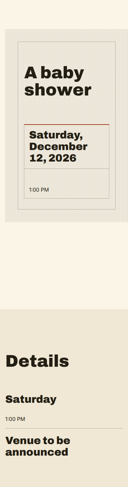
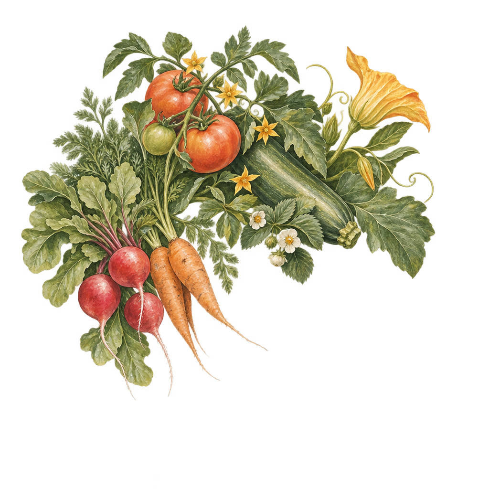
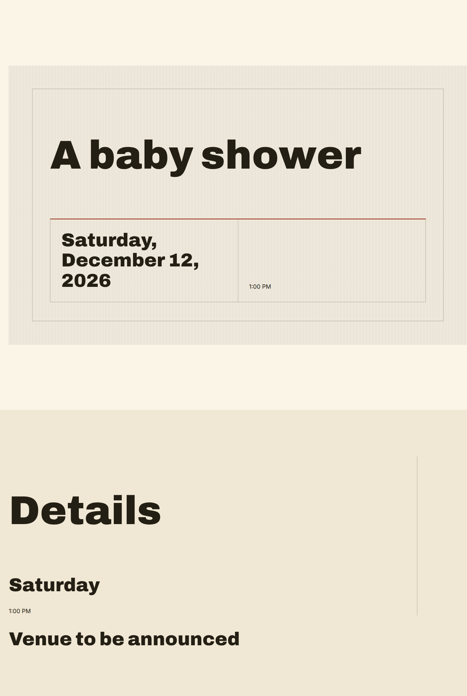

Premise: Tended Welcome (Phase 4D concept 1, read-only). One image, one call, no retry.
Artwork leaf. No model authored it and it is not composition evidence.
requires visual operator inspection — no local detector ran, and no second paid model was called to look.
| provider | openai-images |
|---|---|
| model (pinned, dated) | gpt-image-2.5-sunburst-2026-09-08 |
| parameters | n=1, size=1024x1024, quality=high, background=transparent, output_format=png, partial_images=0 |
| request id | req_1c72bfc2455e4f569a108e116fc953d8 |
| usage | {"inputTokens":446,"outputTokens":1756,"cachedInputTokens":0,"inputTextTokens":446,"inputImageTokens":0} |
| cost (USD, from reported usage) | 0.05491 |
| provider latency (ms) | 35658 |
| wall (ms) | 35734 |
| ceiling / reserved (USD) | 0.5 / 0.5 |
| second request refused by budget | true |
| dimensions / bytes | 1024x1024, 1595223 bytes |
|---|---|
| alpha channel present | true |
| fully transparent | 633666 (60.4311%) |
| partially transparent | 414910 (39.5689%) |
| fully opaque | 0 (0%) |
| looks like an opaque canvas | false |
| all four outer edges clear | true |
| clear edges | {"top":true,"bottom":true,"left":true,"right":true} |
| content bounding box | {"top":52,"left":43,"right":911,"bottom":837,"width":869,"height":786} |
| margins (px) | {"top":52,"left":43,"right":112,"bottom":186} |
| margins (%) | {"top":5.0781,"bottom":18.1641,"left":4.1992,"right":10.9375} |
| edge-risk (content within 2% of an edge) | false [] |
| centroid (0..1) | {"x":0.4358,"y":0.3898} |
| quadrant share of visual mass | {"topLeft":0.4163,"topRight":0.3431,"bottomLeft":0.2106,"bottomRight":0.0299} |
| quadrant transparent ratio | {"topLeft":0.4268,"topRight":0.5348,"bottomLeft":0.7112,"bottomRight":0.9574} |
| lower-right transparency (the requested open space) | 0.9574 |
| dominant colours | [{"hex":"#596537","share":0.0363},{"hex":"#6A7546","share":0.0294},{"hex":"#49552A","share":0.0258},{"hex":"#3A4626","share":0.0254},{"hex":"#646B38","share":0.0248},{"hex":"#757B47","share":0.0236}] |
| distance to each intended colour | [{"intended":"#F3EAD7","distance":1,"share":0.0142},{"intended":"#65704A","distance":0,"share":0.3443},{"intended":"#C75B3F","distance":5,"share":0.0846},{"intended":"#D6A84B","distance":2.2361,"share":0.1133}] |
| before — 390 / 1280 | 390x1474 / 1280x1907 |
|---|---|
| after — 390 / 1280 | 390x1474 / 1280x1907 |
| unchanged by attaching the asset | true |
| verified clean at 390 / 1280 | true / true |



{
"version": "visual_art_intent_v1",
"role": "object",
"subject": "An original, refined grouping of locally grown garden produce with tender botanical growth, leafy forms and a few small seasonal blossoms. It should read unmistakably as growing things, garden abundance and cultivation — a celebratory locally grown world — and never as cartoon, children's illustration, rustic kitsch, grocery advertising or generic stock clip art.",
"medium": "Sophisticated hand-painted editorial illustration: gouache and watercolour-like pigment with subtle coloured-pencil and natural line detail. Bespoke and tactile, not photorealistic, and imitating no named artist, brand or existing artwork.",
"composition": "A hero decorative anchor beside the event's own words, never the content itself. Weight the visual mass toward the upper left of the frame and leave meaningful open transparent space toward the lower right, so the text set nearby stays dominant. Keep the meaningful subject comfortably inside the canvas, with no leaf, produce or blossom cut by an edge.",
"subjectWeight": "balanced",
"negativeSpace": "bottom",
"background": "transparent",
"cropSafety": "generous",
"paletteRelationship": "harmonize",
"paletteHexes": [
"#F3EAD7",
"#65704A",
"#C75B3F",
"#D6A84B"
],
"hostConstraints": [
"Not childish.",
"Not cheesy."
],
"prohibited": [
"No logos, trademarks, brand marks or wordmarks.",
"No proprietary characters, licensed figures or campaign artwork.",
"No copying of a named artist's or studio's work; translate influence, never reproduce it.",
"No photography or photorealistic likeness of real people.",
"No text, lettering, numerals or captions anywhere in the image.",
"No labels, signage, packaging or product branding of any kind.",
"No opaque rectangular background, canvas, paper texture or field of colour behind the subject.",
"No photorealistic grocery or product-advertising composition."
]
}